我們很高興地宣布 3JL Minecraft 伺服器將於 2024 年 6 月 29 日重新開放！
新的伺服器 IP 為 nekocat.site，目前支援 Minecraft 1.20 版本。歡迎所有老玩家回歸，也歡迎新玩家加入我們的世界！
coffeecat2006 — 聖誕場景比賽開始！
【活動詳情】
【獲勝獎勵】
【佳作獎勵】
coffeecat2006 — @3JL伺服器玩家
地形更新：新地形將自動生成，更新後的新區塊可能會生成全新地形。
另外，新更新的地形將產生新的村莊、地下城及結構。
coffeecat2006 — @3JL伺服器玩家
伺服器萬聖活動倒數 3 次更新，接下來只剩 2 次了。
【更新內容】
（圖中未顯示材質的是原版弩）
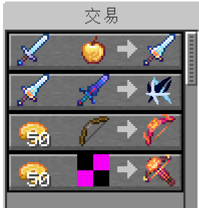coffeecat2006 — @3JL伺服器玩家
嗨，我今天生日，因此今天不會進行更新。稍後將於 21:00 抽出一位玩家送 1 玉碎磚；若抽到不活躍者則不重抽，中獎者可選擇換 9 個福袋。
coffeecat2006 — @3JL伺服器玩家
今日更新內容：玩家現可於活動場地 2F 換取搗蛋藥水。
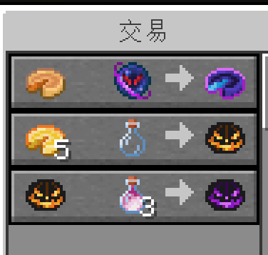coffeecat2006 — @3JL伺服器玩家
本次更新修復了導彈使用過程中的錯誤，玩家現可換取銀錠物品，並能合成金南瓜派，更新完成。
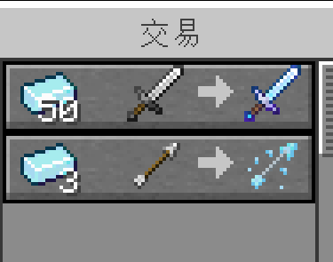 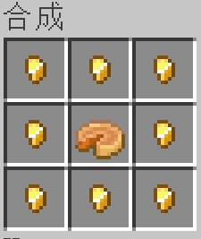【導彈使用更新】
coffeecat2006 — @3JL伺服器玩家
伺服器更新：萬聖活動全面開始，不給糖就「導彈」！
更新內容包括：
（請參考下方圖片）
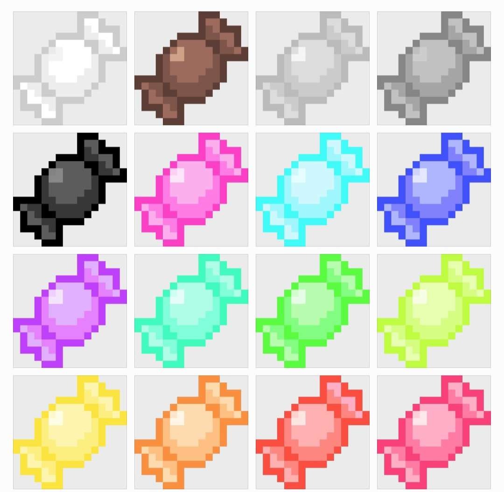 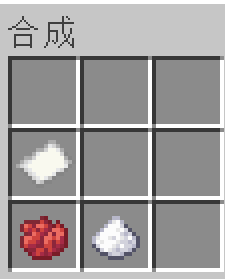 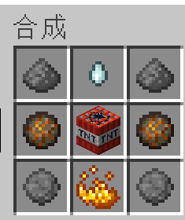coffeecat2006 — @3JL伺服器玩家
剛剛進行了緊急修復，解決了資料包卡頓問題，並更新了保管護符（可防噴 1 次）。同時更改了墓碑合成配方，並開放銀錠合成（採無序合成，任意放置）。
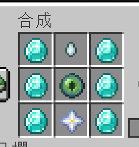 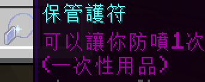 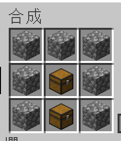 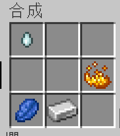coffeecat2006 — @3JL伺服器玩家
伺服器即將重啟，本次更新內容中萬聖活動的防噴功能將關閉，但墓碑功能仍保留：當玩家死亡時，系統會在死亡處留下一個箱子以儲存物品。墓碑合成配方詳情請參考相關影片。
(影片連結請參考 Discord 公告)
coffeecat2006 — @3JL伺服器玩家
萬聖活動即將開啟，活動持續 1 個月！
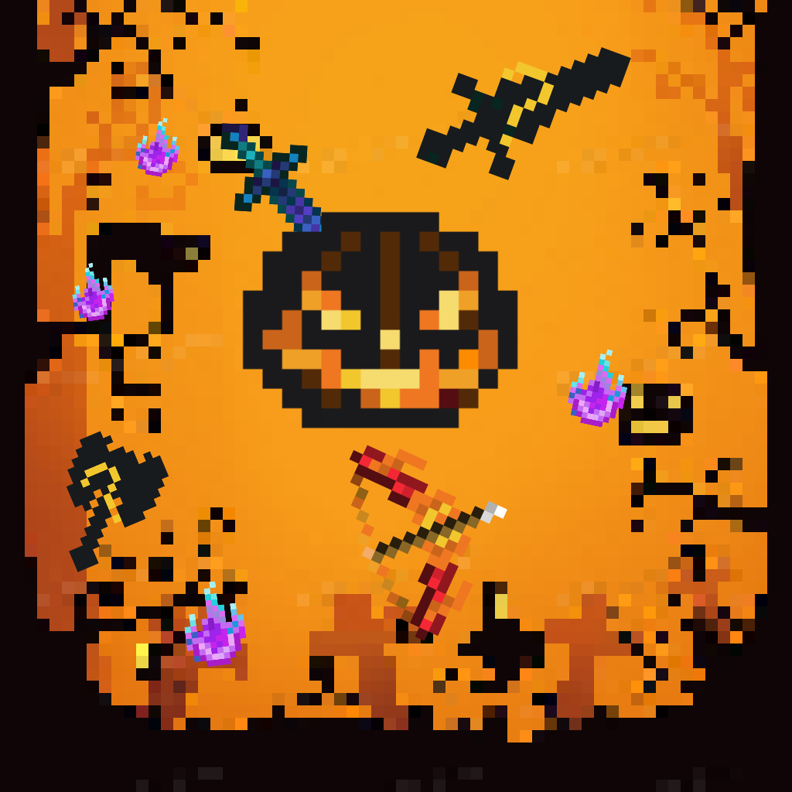coffeecat2006 — @everyone
伺服器即將全面升級：
缺點：改用 Fabric 設置，基岩版無法加入（目前僅支援 1.20.1，未來插件更新後可能改善）；tpa 插件預計日後更新。
更新期間伺服器 IP 可能會變更，更新地圖檔需約 1 天時間。感謝 brian 提供伺服器支援。
新 IP：nekocat.site | 版本：1.20.1
coffeecat2006 — @everyone
中秋活動現已開始！在初始點附近的羊毛村，玩家可透過攤商劇情任務解鎖稀有道具，並可兌換中秋限定福袋，還有抽獎機會。請大家趁活動期間多多參與！
coffeecat2006 — @everyone
伺服器獲得特殊物品取得方法大更改。之前收到許多反饋，表示購買傳送書困難，故將所有特殊物品均放至合成表中。玩家現可在家中合成，合成台與以往不同，需向村民購買。
（地點與原先村民相同，玩家可在自家放置伺服器專屬合成台，隨時合成所需物品。）
jack0301_ — By coffee cat
關於傳送系統卡 Bug 的原因，部分情況無法避免：
@everyone
jack0301_ — @everyone
伺服器已完成傳送系統設置，但因製作人員遺忘記錄玩家 ID，目前僅提供傳送到 coffeecat2006 與 jack0301 的選項。
使用方式：於重生點購買傳送書（可重複使用，每次消耗 2 級經驗值），按照說明進行操縱。
注意： 一旦開始傳送，請務必完成傳送後再碰觸物品欄；否則可能導致傳送中斷，影響其他玩家。
— 指令包作者：coffeecat
如有持續無法傳送，請回報給 @coffeecat。
Lanyukill1206
相信大家已知 1.20 將於 6 月 7 日發布，屆時伺服器將進行更新。為免玩家數據丟失（如物品欄消失），請務必在 6 月 7 日前將物品放入箱中。
另外，由於 1.20 更新包含段造台，升級後獄難度將提高，請提前儲備所需物資。
jack0301_ — minecraft伺服器
本次更新主要功能包括：
歡迎大家提供意見以持續改進功能。
jack0301_ — @everyone
當前伺服器已上線傳送指令包，作用：使用經驗值進行傳送。
已知問題：
晚點會進行修正。
jack0301_
大家，今天影片預計將於 8 點放出，請大家關注！
Lanyukill1206
由於資金不足，決定先使用 Aternos，有錢後再轉用 Exaroton。伺服器地址：3jlbro.aternos.me，Port：30223。
Lanyukill1206
大家好，我們的伺服器將會在明天開放，敬請期待！